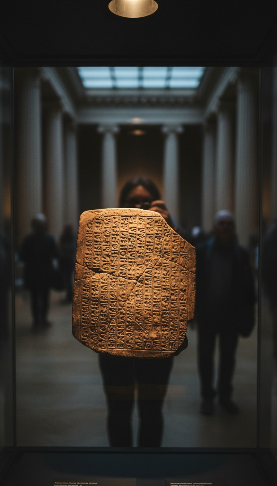

The opening chapter of Genesis was not the first version of that story. It was the second. The first version is sitting in a glass case in Bloomsbury, and it was written 800 years earlier.
Almost nobody walks past it. The label is small. The implications are not.

The 1849 Dig That Nobody Talks About
In 1849, English archaeologist Austen Henry Layard was excavating a mound near modern Mosul, Iraq. He was looking for the lost city of Nineveh. He found it, and inside it he found the burned royal library of the Assyrian king Ashurbanipal, who reigned from 668 to 627 BCE.
Inside that library, packed in baking clay, were seven tablets that scholars now call the Enuma Elish. The first tablet is cataloged as K.3437 in the British Museum collection. It dates to the Neo-Assyrian period, roughly 911 to 612 BCE, with linguistic roots reaching back to the late second millennium.
That puts the written Enuma Elish at least 800 years before the Genesis text most biblical scholars date to the 6th century BCE. The British Museum lists the tablet in its online collection under registration number 1905-0409-415. You can look it up right now.
Six Stages, In The Same Order
The Enuma Elish opens with a single substance. Primordial water. No sky. No land. The waters are personified as two beings, Apsu the fresh water and Tiamat the salt water. Their bodies are the universe before the universe begins.
Genesis 1:2 opens with the same scene. "The earth was without form, and void, and darkness was upon the face of the deep." The Hebrew word translated as "the deep" is tehom. Linguists, including Hermann Gunkel in his 1895 work Schopfung und Chaos, traced tehom directly to the Akkadian Tiamat. Same root. Same primordial water.
Then the sequence runs in parallel. Light is separated from darkness. The waters above are divided from the waters below. Dry land appears. Luminaries are set in the firmament. Humans are formed last. Order from watery chaos in six structured stages, in the same order, in both texts.
The Splitting of the Body
In tablet IV of the Enuma Elish, the storm god Marduk kills Tiamat. He splits her body in half. One half he raises up to form the heavens. The other half he pushes down to form the earth. He pegs the corners in place. He sets the stars in their stations.
Genesis 1:6-7 describes a firmament that divides the waters above from the waters below. The Hebrew word raqia describes a beaten metal dome. The same architectural concept. The same act of dividing a watery body into upper and lower halves.
The Hebrew scribes did not invent the deep. They inherited her name from the goddess Marduk butchered to build the sky.
Why The Timing Is Not A Coincidence
In 597 BCE, Nebuchadnezzar II of Babylon laid siege to Jerusalem. In 587 BCE he burned the temple and deported the priestly and scribal class to Babylon. This is the Babylonian Exile. It lasted until Cyrus the Great of Persia released them in 539 BCE.
For roughly 50 years, the Israelite intellectual class lived inside the city whose patron god was Marduk. Every spring during the Akitu festival, the Enuma Elish was recited aloud in public for eleven days. Britannica documents this as standard Babylonian state ritual. The exiled scribes would have heard it. Repeatedly.
The scholarly consensus, going back to Friedrich Delitzsch's "Babel und Bibel" lectures in 1902, places the final redaction of Genesis 1, the Priestly source, during or immediately after this exile. The text was finalized by men who lived inside the older story.
What The Scribes Kept And What They Cut
The Hebrew authors did not copy. They edited. Tiamat the goddess becomes tehom the impersonal deep. Marduk becomes Elohim. The cosmic battle becomes a calm spoken command. The polytheism is stripped out. The architecture stays.
The firmament stays. The waters above and below stay. The six stages stay. The order of creation stays. The creation of humans on the final day stays. What was removed was the divine combat. What remained was the scaffolding.
This is not a fringe reading. It is the standard position in scholarly works ranging from Alexander Heidel's 1942 "The Babylonian Genesis" published by the University of Chicago, to the Anchor Bible commentary on Genesis. The debate is about the degree of borrowing, not whether borrowing occurred.
Where The Tablet Sits Right Now
K.3437 is held in the Department of the Middle East at the British Museum, Great Russell Street, London. It is part of a collection of approximately 130,000 cuneiform tablets recovered from Mesopotamia. Most of them have never been fully translated. Most have never been displayed.
The Enuma Elish fragments are among the most famous tablets in the collection, and they are still routinely missed by visitors heading to the Rosetta Stone or the Parthenon marbles in the wings nearby. The label does not mention Genesis. The label does not need to.
The question is not whether the Hebrew scribes knew the Babylonian creation story. They knew it by heart. They sang along to it for fifty years. The question is what else they kept that we have not yet identified.
If Genesis 1 is a sanitized rewrite of an older Babylonian text, what is Genesis 2. What is the flood narrative, which has its own older parallel in the Epic of Gilgamesh, Tablet XI, also in the British Museum. What is the Tower of Babel, set in Babylon itself. The pattern does not stop at chapter one. It is just easier to see there.
Walk into Room 55 next time you are in London. Look at K.3437. Then tell me which book came first.
Books that informed this investigation
- The Sumerians (Kramer)
- Babylon: Mesopotamia and the Birth of Civilization (Kriwaczek)
- The Ancient Near East (Hallo & Simpson)
As an Amazon Associate, Hidden Epoch earns from qualifying purchases. Cost to you: nothing.
Research safely
The VPN we use to research without being tracked. First 3 months free.
Get NordVPN →